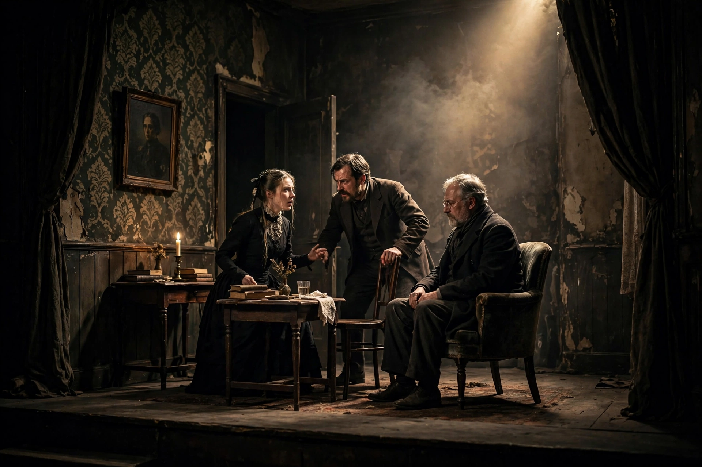

A chamber play is a play of usually three acts which can be performed with a small cast and simple scenic effects, analogous to chamber music. The term is especially associated with August Strindberg, who wrote a series of chamber plays for his Intimate Theatre in Stockholm in 1907.

Strindberg's Opus 1–5 chamber plays — Thunder in the Air, The Burned House, The Ghost Sonata, The Pelican and The Black Glove — concentrate on intimate psychological and supernatural themes with few characters and a single setting. The Ghost Sonata is the most famous, a dreamlike work that influenced expressionism and the theatre of the absurd.
The German Kammerspiel film movement of the 1920s adapted the idea to cinema — small-scale, realistic dramas of ordinary people — influencing directors such as Ingmar Bergman, whose intimate films are often described as chamber dramas.